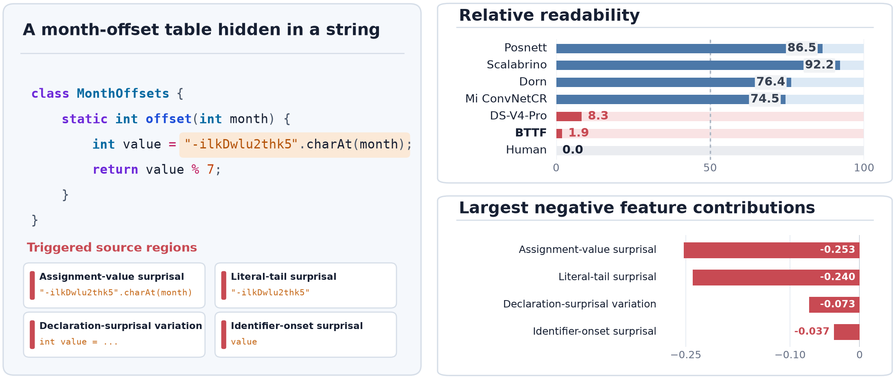

BTTF: Measuring Code Through Human Understanding
Code readability is a longstanding problem in software engineering. How to judge whether code is easy to read, and explain what makes it difficult, still lacks a satisfactory solution. Today, large language models perform impressively at generating and understanding code. Give one a hard-to-read snippet and ask what is wrong and how to improve it, and we can always get some answers. However, those answers lack a quantitative basis, are incomplete, and sometimes offer little concrete guidance.
Even asking AI to rewrite the code automatically for better readability cannot guarantee that the result will align more closely with how people experience it. To judge whether a change genuinely makes code easier to read, we need scores that align with human judgement and a clear account of which code properties affect those scores, and by how much.
We developed BTTF (Back to the Future), combining classic linear regression with new measurements from pretrained models. We use these models to measure code and calculate readability from 11 features. Each feature’s contribution is visible, so we can identify the properties that lowered the score and how much they mattered.[1]
Understanding reading difficulty through obfuscated code
The month-offset lookup below is adapted from a compact day-of-week implementation. This is an obfuscated way to write a lookup table: offsets that could be listed directly are hidden in a string with no obvious meaning. The program retrieves a character, reads its character code, and takes the remainder modulo seven to recover the value. The computation is simple, but the reader must first unravel the encoding to understand the lookup.

Representative existing readability models get this example wrong. These methods include both hand-engineered feature models and deep-learning models. They give it high ratings, while all five developers give it the lowest rating. Posnett, Scalabrino, Dorn, and Mi are the four methods shown in the figure.[3, 4, 5, 6] Faced with the string and remainder operation, readers struggle to see how they relate to month offsets, let alone why they produce the correct values.
This misjudgement exposes a crucial omission: readability depends on whether people can understand the code. Length, structure, text, and visual properties describe its outward form, but do not adequately capture how readers recover meaning from details, organise information, and connect it to the preceding context. The obfuscation disrupts precisely that process: the lookup table occupies only a few characters, yet takes more effort to reconstruct. DeepSeek and BTTF both recognise the difficulty here; BTTF also identifies the specific code properties that lower its score.
Existing methods also struggle to turn scores into specific improvement directions. Deep-learning models encode their judgement in learned representations, leaving the explicit properties responsible for penalties unclear. Dorn and Scalabrino expose features, but some weights point in the opposite direction to their intended meanings. Posnett is directionally consistent, but its line count and two composite metrics provide broad summaries with little indication of which construction needs attention.
In this example, the largest penalties come from the computation on the right-hand side of the assignment and the encoded string. Neither is easy to anticipate from the preceding code. BTTF measures these difficulties through assignment-value surprisal (how unexpected the content assigned to a variable is) and literal-tail surprisal (how hard it is to predict the code’s most unexpected numbers or strings). The reading difficulty is concrete: we have to stop and work out why this step is written this way.
Rethinking readability through how people read code
When reading unfamiliar code, we usually start by understanding individual statements and gradually work out what the whole piece does. We cannot keep every detail in mind as precisely as a computer stores it. As we read, we interpret and group the operations: these checks validate the input; those assignments update the state. As their meanings become clear, we build an understanding of the program without continually remembering every variable and operation.[9, 10]
Code that serves the same goals can be organised differently, and that naturally changes how hard it is to understand. One implementation can finish validating the input before updating the state; another can interleave checks, calculations, and updates. The latter makes us connect scattered details to reconstruct the same logic. The organisation of these details, and how they follow the preceding code, both affect readability.
Alongside traditional properties such as line length and operator density, we therefore need to understand two things: how clearly the code’s meanings are organised, and how well new information connects to what came before.
Semantic organisation: grouping scattered details into clear concepts
Existing models lack an explicit measure of how readers group code information. Deep-learning models fit the data and leave their judgements in hard-to-explain internal representations; visual models mainly examine layout and presentation; other feature models combine statistical properties, with some fitted weights even opposing their intended meanings. When a key reading factor is missing, adding more mixed statistical indicators does little to fill the gap. The resulting feature combination may fit scores while offering little explanation of where reading difficulty comes from.
Our earlier model (the embedding-only version, before we added contextual prediction features) encountered this problem too. It measured semantic organisation but lacked a direct measure of contextual prediction difficulty, and byte entropy remained prominent in feature selection. That statistic supplied useful clues without identifying the particular constructions behind the difficulty. Surprisal measured for specific code constructs later replaced it. We needed to measure the missing source of difficulty first. Selecting and combining the same indicators could otherwise leave us with a model that predicted well but explained poorly.
Our intuition is that semantically similar names and operations are more likely to serve a common task. For example, names sharing a meaningful prefix may refer to an entity, its identifier, and its associated table. Readers can readily treat them as one family of objects. BTTF captures this semantic similarity with embeddings and automatically groups related fragments through clustering, turning this aspect of reading into something we can measure.
Think of the embedding space of an embedding model or a large language model as a “map of meaning”. The model turns words or code fragments into lists of numbers that give them positions. A classic example is “king − man + woman ≈ queen”: arithmetic on the word vectors produces a result close to the position of “queen”. Relationships between meanings can thus appear as distances and directions.[8]
We place code names and fragments in such a space, find related groups, and examine their distribution. This real example comes from the Scalabrino dataset: propertyEntity, propertyEntityId, and propertyTable name an entity, its identifier, and its associated table. They belong to one family; two other entity types have their own families of related names.

The model automatically finds these three relationships. When we read the code, we also naturally group related variables around three types of entity, recognising three tasks: preparing the property data, preparing the transitive data, and preparing the audited data. We usually do not remember each variable name individually. We abstract them into these three tasks and understand that the method as a whole initialises data.
Contextual surprisal: measuring the extra effort of understanding code
Code also needs to make sense in context. Traditional byte entropy only measures character distributions: rearranging the same characters can leave the statistic unchanged while completely changing the meaning. It cannot tell us whether the preceding code explains a value, or which construction makes the code difficult to read.
After reading total = price * ..., we might expect a quantity next. An unexplained value would make us stop and reconsider. We therefore also measure how well the preceding code helps us anticipate what follows.
Large language models can provide a signal here. A core task in pretraining a generative language model is to predict the next token from the preceding context. Through training, the model learns to assign probabilities to what might come next. The lower the probability of what actually appears, the higher its “surprisal”. BTTF uses this signal to identify unexpected content with little preceding explanation and measure how surprising it is. In the month-offset example, the obfuscated string is difficult to anticipate from context, and this shows up in the feature measuring unusual literals.
We therefore use embeddings to measure the semantic distribution of the whole program and how compactly its meanings are organised. We use surprisal to characterise the extra effort[11] involved in understanding unexpected content as we read. We also retain some traditional measurements.
Accurate scores, clear explanations
Across six human-rated datasets and more than a thousand programs, BTTF’s overall scoring performance substantially exceeds every existing readability method in the evaluation. Its average correlation with human judgements improves on the strongest baseline by up to 0.101, setting a new state of the art (SOTA) in code readability scoring.[1]
Even when the best-performing zero-shot prompt from prior research[7] is applied to frontier models such as DeepSeek V4 Pro and GPT-6.1 Sol, BTTF remains clearly ahead. Large models can produce fluent assessments, but our explicit measurements give more accurate scores for how readable the code actually is.
BTTF also addresses a central problem in the explainability of existing methods. Traditional feature models may have contradictory weight directions or rely on composite metrics that offer little guidance on what to improve. Deep models and direct-scoring language models cannot specify how much each code property affected the score. BTTF shows the contributions of all 11 features. These contributions directly determine the score, and their directions remain consistent across every pretrained-model combination tested. Which properties lowered the score, by how much, and where the main problems lie all have explicit evidence.
Sensitivity to declines in code readability
We also deliberately made the same code harder to read: removing comments, obscuring names, inserting distracting code, or squeezing the layout. These changes give us a clear test: the readability score should fall after the edit.
On Java and Python code from real projects, BTTF detects 93.8% and 87.6% of the readability-reducing changes, substantially outperforming existing local readability models. Even against Dorn, the strongest local baseline, the response-rate gaps reach 14% and 19.2%, respectively.
This performance is nearly on par with the most advanced large language models on this task. Bear in mind that these changes are conspicuous to a language model: adding dead code, for example, or replacing variable names with meaningless characters. Such interference is easy to spot. Everyday reading difficulties are often subtler and demand more than recognising these obvious problems.
From identifying problems to quantifying their impact
Consider another example (sample 66 in the Buse dataset[2]). It contains just three statements:
mProgramTable.changeSelection(row, 0, false, false);
Program p = (Program) mProgramTableModel.getValueAt(row, 1);
JPopupMenu menu = devplugin.Plugin.getPluginManager()
.createPluginContextMenu(p, CapturePlugin.getInstance());Wrapped for display; measurements use the original source.
Human readers rate this snippet poorly, while DeepSeek and GPT-6.1 give it high scores. A representative GPT explanation identifies the short name p, numeric indices, unclear Boolean arguments, and the long final call. Those observations still accompany a high score.
| Assessment source | Score |
|---|---|
| Human readers | 2.60 / 5 |
| DeepSeek V4 Pro | 17 / 20 |
| GPT-6.1 Sol | 18 / 20 |
| BTTF | 0.135 / 1 |
Both language-model scores are means of three runs.
BTTF’s low score is closer to the human assessment. Operator density supplies the largest penalty, followed by unusual literals and difficult-to-predict identifiers and assignments. The long line contributes a smaller penalty. Each contribution appears beside the score, showing the relative weight of these problems.
| Main negative contribution | What it measures here | Score contribution |
|---|---|---|
| Operator density | Many operations packed into three statements. | −0.271 |
| Literal-tail surprisal | Concrete values that are hard to anticipate from preceding code. | −0.115 |
| Identifier-onset surprisal | The beginnings of some names are hard to anticipate from preceding code. | −0.053 |
| Assignment-value surprisal | The right-hand sides of assignments are hard to anticipate from preceding code. | −0.048 |
| Longest line | The longest line in the original code has 116 characters. | −0.018 |
These are the main negative contributions used directly in BTTF’s score calculation. Larger absolute values mean greater influence.
My choices and what comes next
We deliberately chose not to use a visual model. To me, how comfortable code looks is more susceptible to personal habits and preferences. I want a clearer basis for the score, so I favour features grounded in information theory or inspired by cognitive science: measurements of how information is organised and how much effort it takes to understand it.
That does not mean I dismiss visual features. We do, after all, read code with our eyes. Layout and visual presentation carry a great deal of information and can affect reading. Dorn’s visual approach has value in its own right, and Mi’s use of a CNN to learn from code presentation also has a reasonable starting point. I chose a different route to make the basis of the score clearer.
I also disagree with the argument that readability matters less because large language models can cope with hard-to-read code. Experiments on individual methods or classes are far removed from sustained reading, cross-file understanding, and code changes in real projects. A small effect in those experiments demonstrates some robustness at a particular task and scale. It does not show that readability has no effect. We will investigate whether these effects accumulate as real projects grow in scale.
Moreover, in sensitive settings such as core financial software, the central components of complex systems, and code involving private information, security and confidentiality requirements often limit the large-scale use of language models. Development and review still depend on people, at least for now. A model’s ability to handle hard-to-read code cannot replace human understanding and judgement, or make readability for people irrelevant.
References
- Tairan Wang and Earl T. Barr. Back to the Future: Regressing Readability Features from LLMs. arXiv:2610.04641, 2026.
- Raymond P. L. Buse and Westley R. Weimer. Learning a Metric for Code Readability. IEEE Transactions on Software Engineering, 36(4), 546–558, 2010.
- Daryl Posnett, Abram Hindle, and Premkumar Devanbu. A Simpler Model of Software Readability. MSR, 73–82, 2011.
- Jonathan Dorn. A General Software Readability Model. University of Virginia, 2012.
- Simone Scalabrino, Mario Linares-Vásquez, Rocco Oliveto, and Denys Poshyvanyk. A Comprehensive Model for Code Readability. Journal of Software: Evolution and Process, 30(6), e1958, 2018.
- Qing Mi, Jacky Keung, Yan Xiao, Solomon Mensah, and Yujin Gao. Improving Code Readability Classification Using Convolutional Neural Networks. Information and Software Technology, 104, 60–71, 2018.
- Wendkûuni C. Ouédraogo et al. Human-Aligned Code Readability Assessment with Large Language Models. arXiv:2510.16579, 2025.
- Tomas Mikolov, Wen-tau Yih, and Geoffrey Zweig. Linguistic Regularities in Continuous Space Word Representations. NAACL-HLT, 746–751, 2013.
- Nick Chater and Paul Vitányi. Simplicity: A Unifying Principle in Cognitive Science?. Trends in Cognitive Sciences, 7(1), 19–22, 2003.
- Nancy Pennington. Stimulus Structures and Mental Representations in Expert Comprehension of Computer Programs. Cognitive Psychology, 19(3), 295–341, 1987.
- Roger Levy. Expectation-Based Syntactic Comprehension. Cognition, 106(3), 1126–1177, 2008.